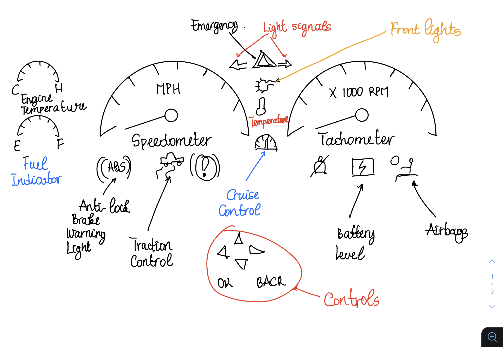

New Personal Design
Most Common Uses
The most commonly used items in the dashboard are the speedometer and the tachometer to start with. After that we have indicators such as the left and right signal.
We also have the fuel indicator or battery life (in the case of an
electric vehicle). Cruise control is used for people that usually drive long distances. The engine temperature indicator is useful especially during the summer and the winter.
Other indicators that users don't really use frequently are the likes of the oil pressure light, traction control malfunction, or the automatic shift lock.
Controls User Interacts With
- The user with the light signals.
- The user with the front light indicator.
- The cruise control indicator
- The internal temperature
- The music volume
Possible Mistakes
- Not using appropriate colors
- Placing some indicators in places where they are not usually
- Overcrowding the dashboard with very rare features
- Not adding a common feature
Imporovements and Sketch

This design incorporates the most used features in any car in my opinion. It places them in places that are easy to reach for the end user. It also used colors and icons familiar to most users.
The bottom has controls that can allow the user to choose between the different options.